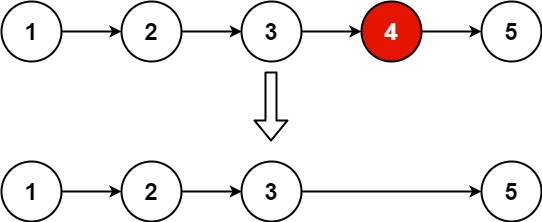

19. 删除链表的倒数第 N 个结点
哨兵 + 快慢指针：fast 先走 n 步，再和 slow 一起走到尾，slow 就停在待删结点的前一个。
思路
- 哨兵
dummy接在表头前：删的恰好是头结点时，也有「前一个结点」可用，不用特判。 fast、slow都从dummy出发，fast先走n步，两者之间隔着n个结点。- 一起走到
fast.next == null：fast在最后一个结点，slow就在倒数第n + 1个结点，即待删结点的前一个。 slow.next = slow.next.next跳过待删结点，返回dummy.next；只扫一遍链表。
图解
最优解
1class Solution {2 public ListNode removeNthFromEnd(ListNode head, int n) {3 // 哨兵：删的是头结点时也有前驱4 ListNode dummy = new ListNode(0, head);5 ListNode fast = dummy, slow = dummy;6 // fast 先走 n 步，和 slow 隔开 n 个结点7 for (int i = 0; i < n; i++) fast = fast.next;8 // 一起走，fast 到最后一个结点时，9 // slow 正好在待删结点的前一个10 while (fast.next != null) {11 fast = fast.next;12 slow = slow.next;13 }14 slow.next = slow.next.next;15 return dummy.next;16 }17}题目
给你一个链表，删除链表的倒数第 n 个结点，并且返回链表的头结点。
示例 1：

输入：head = [1,2,3,4,5], n = 2 输出：[1,2,3,5]
示例 2：
输入：head = [1], n = 1 输出：[]
示例 3：
输入：head = [1,2], n = 1 输出：[1]
提示：
- 链表中结点的数目为
sz 1 <= sz <= 300 <= Node.val <= 1001 <= n <= sz
进阶：你能尝试使用一趟扫描实现吗？
题面取自力扣当前版本。
数据快照 2026-11-04。题面版权归力扣所有，本站点仅供本人学习使用，请勿对外发布。